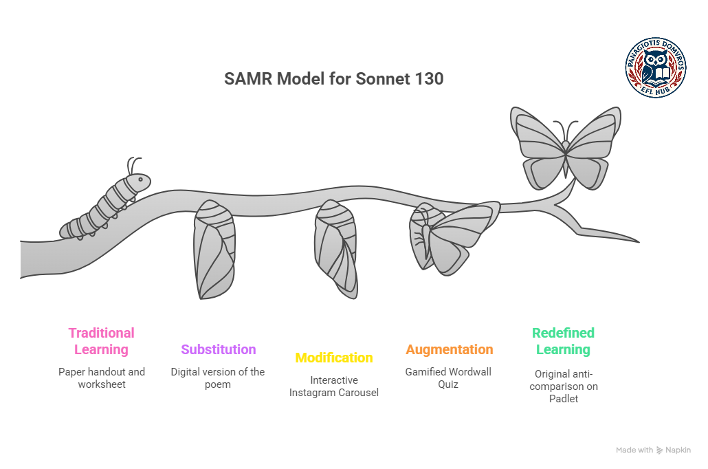

This project outlines a complete, multi-stage lesson designed to move students from basic comprehension to authentic creation. It uses Shakespeare's Sonnet 130 as the core text to explore the concept of "comparisons" and "anti-comparisons."
Project Files
-
►
Sonnet 130 Instagram Carousel: Interactive post with audio and translation.
-
►
Comparison Quiz: Wordwall game for comprehension.
-
►
Creation Hub (Padlet Wall): Interactive web space for student creation.
Lesson Flow & SAMR Analysis
1. Stage: Substitution (S)
Activity:
As a pre-lesson or warm-up, students read a static digital version of Sonnet 130 (e.g., a PDF or a plain text file) on their devices. They then type answers to basic comprehension questions (e.g., "What is the mistress's hair compared to?") into a separate Google doc which they share with the teacher.
SAMR Analysis (Substitution):
This is a direct, 1-to-1 substitute for a paper handout of the poem and a paper worksheet. The technology acts as a simple replacement with no functional change to the task.
2. Stage: Modification (M)
Activity:
Students engage with the core text using the Interactive Instagram Carousel. They are instructed to explore the sonnet slide by slide. The carousel format breaks the complex poem into manageable quatrains, forcing focused analysis of each "anti-comparison." The background music creates an immersive, multi-sensory experience. Students click the caption text to reveal the pop-up modern translation, scaffolding their comprehension on demand.
SAMR Analysis (Modification):
This is not just a digital poem. The task of "analysing a sonnet" is significantly redesigned. The Instagram UI re-contextualizes the 400-year-old text, while the interactive tooltips and paced-out content (carousel slides) fundamentally modify the way a student interacts with and deciphers the poem.
3. Stage: Augmentation (A)
Activity:
After exploring the sonnet, students open the Wordwall Quiz to check their understanding. They play the gamified quiz to review the sonnet's comparisons and their meanings and simultaneously be reminded of comparison structures without being presented with a typical table of possible forms of comparison.
SAMR Analysis (Augmentation):
This task is a direct substitute for a traditional matching quiz, but with significant functional improvements. The technology augments the task with:
- Gamification: Timers, scoring, and leader boards increase engagement.
- Instant Feedback: Students immediately know if their answers are correct, reinforcing learning in real-time.
4. Stage: Redefinition (R)
Activity:
The final and most crucial task. Students move from analysis to creation using a Padlet Wall set to the Stream format. The task is two-part:
- Create: Each student must publish their own original "anti-comparison" inspired by Sonnet 130. This post must include their "username," their original text, and a multimedia element (image, GIF, etc.).
- Interact: After posting, each student must interact with the class "feed" by "liking" at least three other posts and "commenting" on at least two others to provide peer feedback.
SAMR Analysis (Redefinition):
The technology allows for a new task that was previously inconceivable. Students are not "handing in" an assignment. They are:
- Creating a new, original multimedia artefact.
- Publishing their work to an authentic, live audience (their peers).
- Collaborating in an asynchronous digital space through comments and reactions.
Lesson Overview
